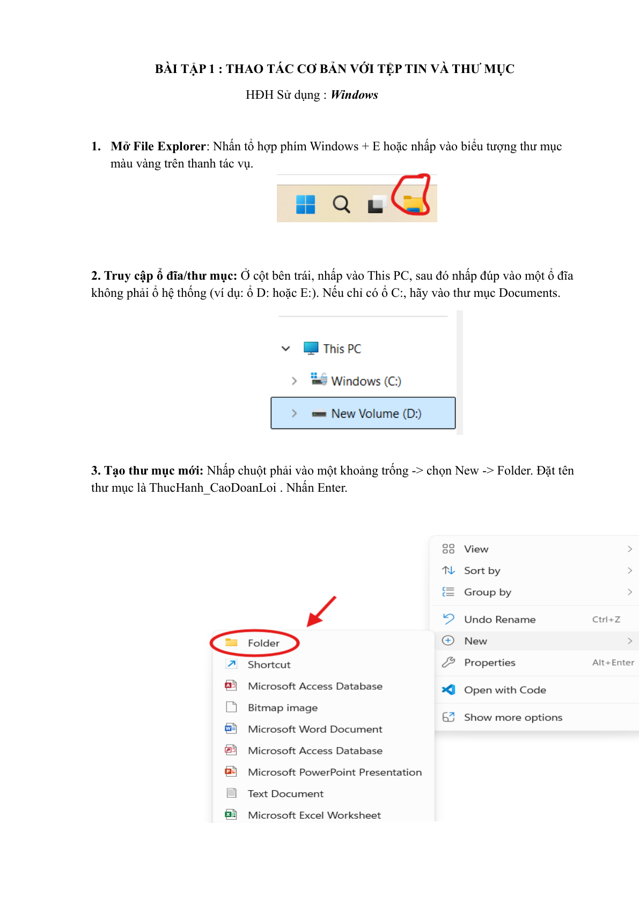
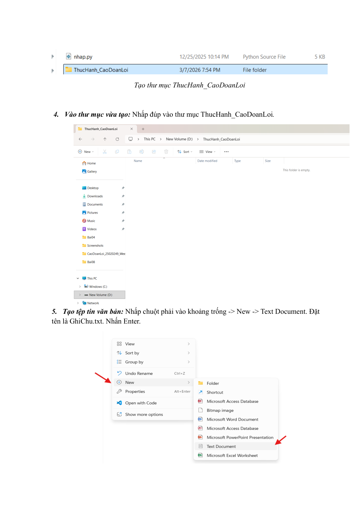
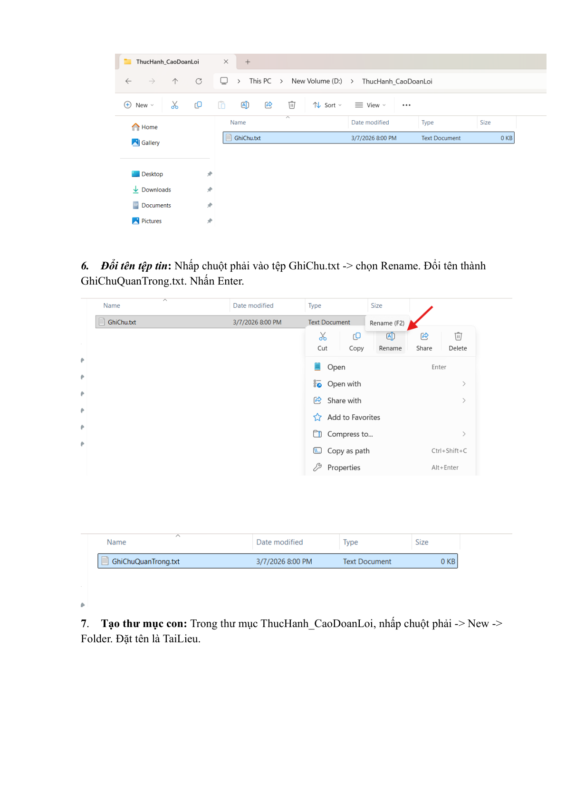
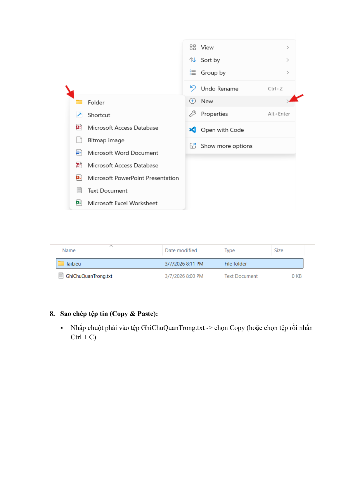
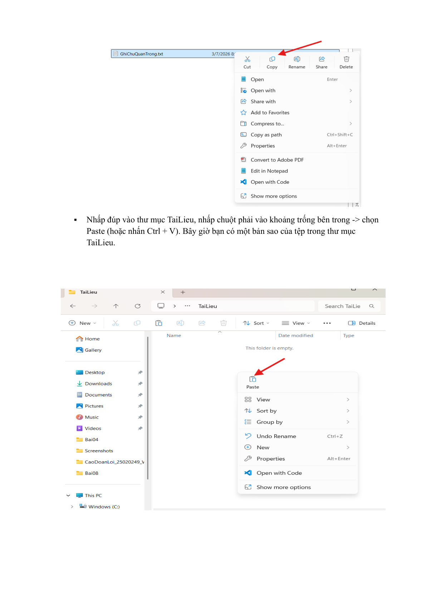
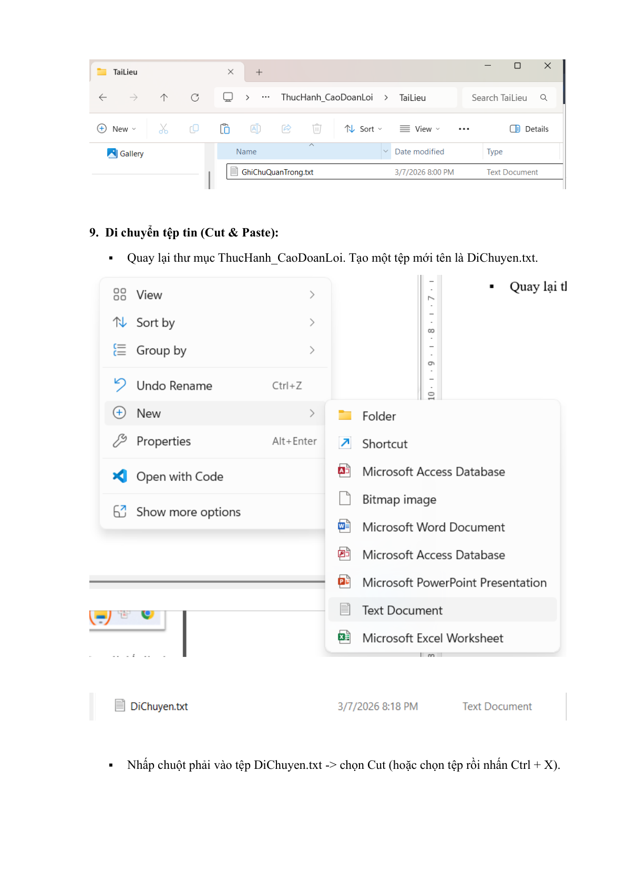
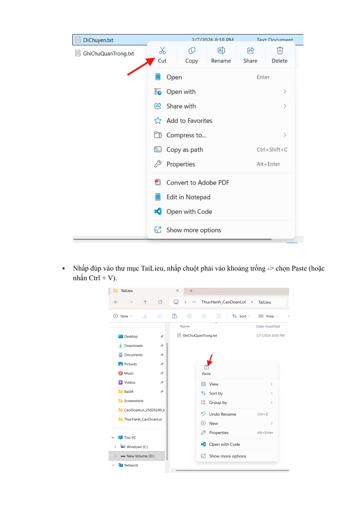
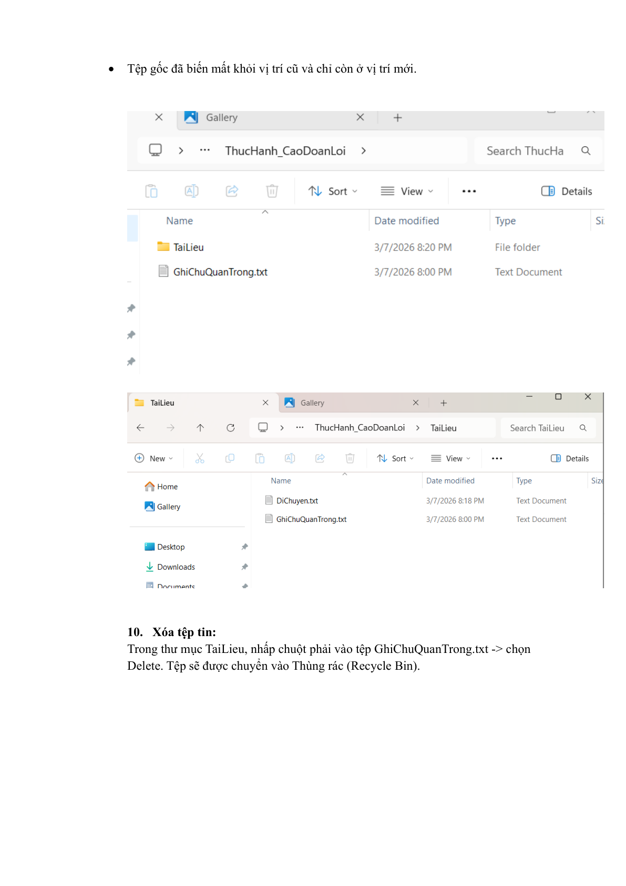
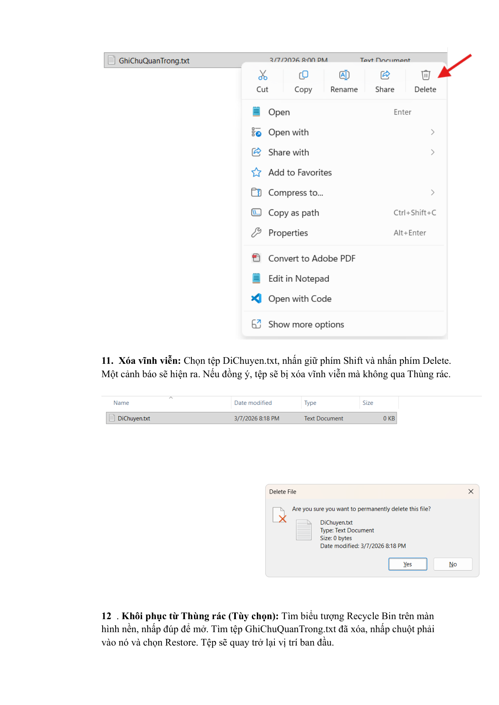
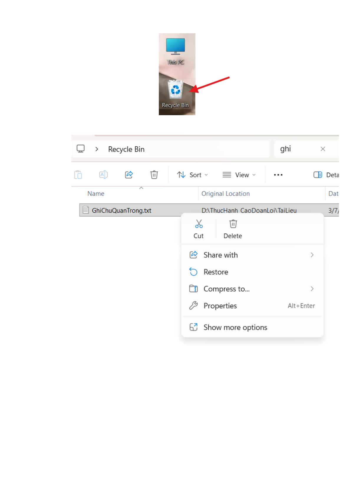

BÀI TẬP 1 : THAO TÁC CƠ BẢN VỚI TỆP TIN VÀ THƯ MỤC
Hệ điều hành sử dụng: Windows
Bước 1: Mở File Explorer: Nhấn tổ hợp phím Windows + E hoặc nhấp vào biểu tượng thư mục màu vàng trên thanh tác vụ.
Bước 2: Truy cập ổ đĩa/thư mục: Ở cột bên trái, nhấp vào This PC, sau đó nhấp đúp vào một ổ đĩa không phải ổ hệ thống (ví dụ: ổ D: hoặc E:). Nếu chỉ có ổ C:, hãy vào thư mục Documents.
Bước 3: Tạo thư mục mới: Nhấp chuột phải vào một khoảng trống -> chọn New -> Folder. Đặt tên thư mục là ThucHanh_CaoDoanLoi. Nhấn Enter.
(Minh chứng bản gốc: Trang 1 & Trang 2 của báo cáo PDF)


Bước 4: Vào thư mục vừa tạo: Nhấp đúp vào thư mục ThucHanh_CaoDoanLoi.
Bước 5: Tạo tệp tin văn bản: Nhấp chuột phải vào khoảng trống -> chọn New -> Text Document. Đặt tên là GhiChu.txt. Nhấn Enter.
Bước 6: Đổi tên tệp tin: Nhấp chuột phải vào tệp GhiChu.txt -> chọn Rename. Đổi tên thành GhiChuQuanTrong.txt. Nhấn Enter.
Bước 7: Tạo thư mục con: Trong thư mục ThucHanh_CaoDoanLoi, nhấp chuột phải -> New -> Folder. Đặt tên là TaiLieu.
(Minh chứng bản gốc: Trang 3 của báo cáo PDF)

Bước 8: Sao chép tệp tin (Copy & Paste): Nhấp chuột phải vào tệp GhiChuQuanTrong.txt -> chọn Copy (hoặc chọn tệp rồi nhấn Ctrl + C). Nhấp đúp vào thư mục TaiLieu, nhấp chuột phải vào khoảng trống bên trong -> chọn Paste (hoặc nhấn Ctrl + V). Bây giờ bạn có một bản sao của tệp trong thư mục TaiLieu.
(Minh chứng bản gốc: Trang 4 & Trang 5 của báo cáo PDF)


Bước 9: Di chuyển tệp tin (Cut & Paste): Quay lại thư mục ThucHanh_CaoDoanLoi. Tạo một tệp mới tên là DiChuyen.txt. Nhấp chuột phải vào tệp DiChuyen.txt -> chọn Cut (hoặc chọn tệp rồi nhấn Ctrl + X). Nhấp đúp vào thư mục TaiLieu, nhấp chuột phải vào khoảng trống -> chọn Paste (hoặc nhấn Ctrl + V). Tệp gốc đã biến mất khỏi vị trí cũ và chỉ còn ở vị trí mới.
(Minh chứng bản gốc: Trang 6 & Trang 7 của báo cáo PDF)


Bước 10: Xóa tệp tin: Trong thư mục TaiLieu, nhấp chuột phải vào tệp GhiChuQuanTrong.txt -> chọn Delete. Tệp sẽ được chuyển vào Thùng rác (Recycle Bin).
(Minh chứng bản gốc: Trang 8 của báo cáo PDF)

Bước 11: Xóa vĩnh viễn: Chọn tệp DiChuyen.txt, nhấn giữ phím Shift và nhấn phím Delete. Một cảnh báo sẽ hiện ra. Nếu đồng ý, tệp sẽ bị xóa vĩnh viễn mà không qua Thùng rác.
Bước 12: Khôi phục từ Thùng rác: Tìm biểu tượng Recycle Bin trên màn hình nền, nhấp đúp để mở. Tìm tệp GhiChuQuanTrong.txt đã xóa, nhấp chuột phải vào nó và chọn Restore. Tệp sẽ quay trở lại vị trí ban đầu.
(Minh chứng bản gốc: Trang 9 & Trang 10 của báo cáo PDF)

